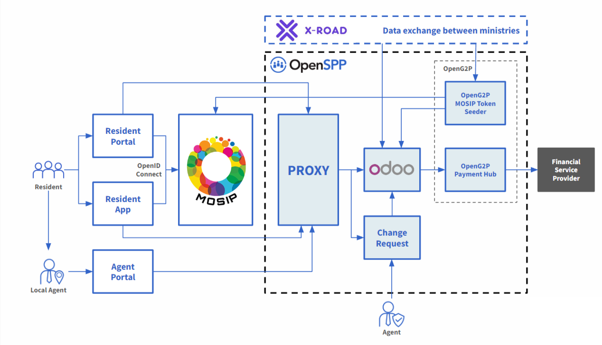

Architecture
Contents
Architecture#
Principles#
OpenSPP must follow platform based approach so that all common features can be configured or the functionality can be extended by other parties.
OpenSPP must not use proprietary or commercial license frameworks. Where deemed essential, such components must be encapsulated to enable their replacement if necessary (to avoid vendor lock-in)
OpenSPP must use open standards whenever possible to expose its functionality (to avoid technology lock-in)
OpenSPP must use commodity computing hardware & software to build the platform
OpenSPP must be simple to deploy and use
OpenSPP must be able to work for small projects with few thousand beneficiaries up to large ones with tens of millions of beneficiaries
Data must be encrypted in-flight and at-rest. All requests must be authenticated and authorized. Privacy of Identity Data is an absolute must in OpenSPP
OpenSPP must follow the following manageability principles:
Auditability & monitor ability of every action in the system
Testability of every feature of the platform
Easy upgrade ability of the platform
OpenSPP should work with different locales so that that Social Protection systems can be localized for languages and cultures easily
The key sub-systems of OpenSPP should be designed for extensibility. For example, if an external system has to be integrated for entitlement determination, it should be easy to do so
Ecosystem approach#
The OpenSPP platform can work as a standalone system or as a part of a larger ecosystem. It needs to be interoperable with other government systems.
Every piece of information stored in the platform must have a corresponding API to access it, so that it can be used by other systems. For example, if you want to integrate OpenSPP with mobile money, you can leverage Payment Hub EE. Through a well-defined set of standard interfaces OpenSPP allows for integration of such components and offers choice of providers for the same.
So, key parameters are:
All public/external facing interfaces of OpenSPP must be standards-based for interoperability whenever possible.
3rd party components should be integrated via well-defined interfaces and be easily installable.
Configurability#
OpenSPP should be flexible for countries/organizations to configure the base platform according to their specific requirements. Some of the examples of configurability are:
Be able to choose the features required.
Be able to configure the attributes of the beneficiaries.
Be able to define the criteria used to determine the beneficiaries.
Be able to define how entitlement is calculated
Extensibility#
OpenSPP should be flexible to extend functionality on top of the basic platform. Some of the examples of extensibility are:
Ability to add a grievance system
Ability to use third party solutions such as MOSIP to store part of the information of registrants
Ability to Integrate data from other systems
Modularity#
All components of OpenSPP should be extensible and their features exposed via interfaces such that the implementation behind the interface can be changed without affecting other modules. Some examples of modularity are:
Determination of eligibility to a program
Calculation of entitlement
Deduplication of beneficiaries
Modular architecture#
OpenSPP is designed to be used standalone with just the core functionalities or with other components.
The previous diagram shows the core components of OpenSPP. Those components provide APIs that allow you to replace the default implementation with your own.
For example, the eligibility calculation can be delegated to a third-party service that has access to other data and just return the eligibility result to OpenSPP.

Furthermore, as OpenSPP is based on the ERP Odoo and use the standard models provided by Odoo, you have access to the thousands of applications available in the Odoo App Store or build your own.
Example components for a mid-size project#
Example components for a large project#
